<!-- .slide: class="title-slide" --> # Transmisja sygnałów w systemach dostępu wielokrotnego --- ## Plan wykładu - kanał telekomunikacyjny i medium dzielone, - dostęp losowy: ALOHA i szczelinowy ALOHA, - nasłuchiwanie nośnej: CSMA, - zapobieganie i wykrywanie kolizji: CSMA/CA oraz CSMA/CD. --- ## Medium dzielone W medium dzielonym wiele stacji korzysta z jednego kanału transmisyjnego. Gdy dwie stacje nadają jednocześnie, ich sygnały mogą utworzyć **kolizję**. <div class="shared-medium"> <div class="shared-channel"><span class="channel-title">Wspólny kanał radiowy</span></div> <div class="radio-station station-a"><div class="node">A</div><strong>Stacja A</strong><span class="role">nadaje</span></div> <div class="radio-station station-b"><div class="node">B</div><strong>Stacja B</strong><span class="role">odbiera kanał</span></div> <div class="radio-station station-c"><div class="node">C</div><strong>Stacja C</strong><span class="role">odbiera kanał</span></div> </div> --- ## Praca w medium dzielonym <div class="media-gallery four"> <p>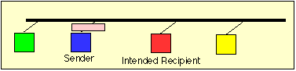</p> <p>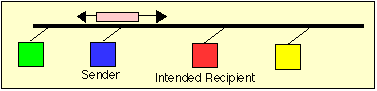</p> <p>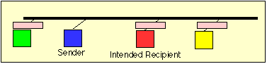</p> <p>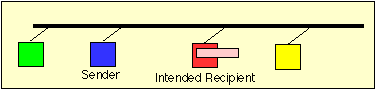</p> </div> --- ## Metody dostępu <div class="columns"><div> **Sporne** Stacje samodzielnie próbują uzyskać dostęp. Kolizje są możliwe, ale protokół określa reakcję. </div><div> **Kontrolowane** Dostęp jest przydzielany, co ogranicza kolizje kosztem dodatkowej organizacji transmisji. </div></div> --- <!-- .slide: class="section-slide" --> # ALOHA --- ## Zwykłe ALOHA - Nadaj, gdy masz dane. - Jeżeli nie nadejdzie potwierdzenie, uznaj kolizję. - Odczekaj losowy czas i spróbuj ponownie. To prosty protokół, ale przy większym obciążeniu często dochodzi do kolizji. --- ## Szczelinowy ALOHA - Czas dzieli się na szczeliny. - Stacja może rozpocząć nadawanie tylko na początku szczeliny. - Zmniejsza to obszar, w którym transmisje mogą się nakładać, i poprawia wykorzystanie kanału. --- ## ALOHA: potwierdzenia i kolizje <div class="media-gallery aloha-gallery"> <p>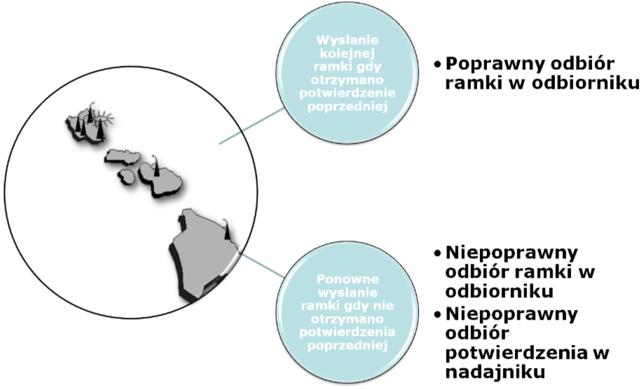</p> <p>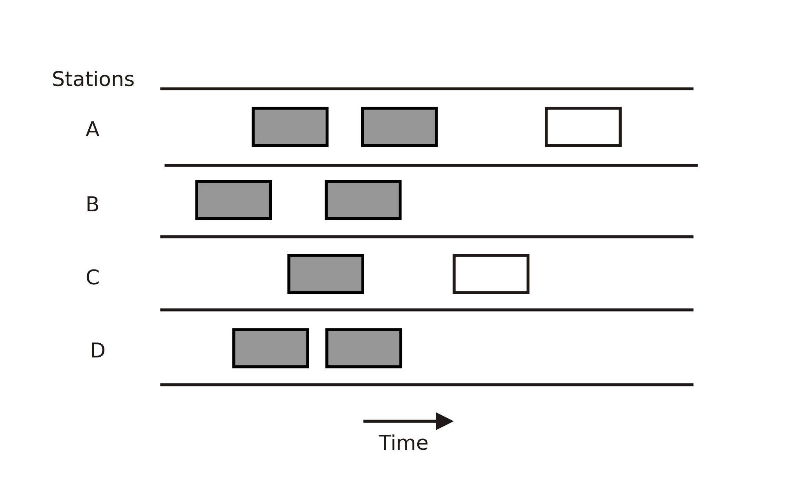</p> <p>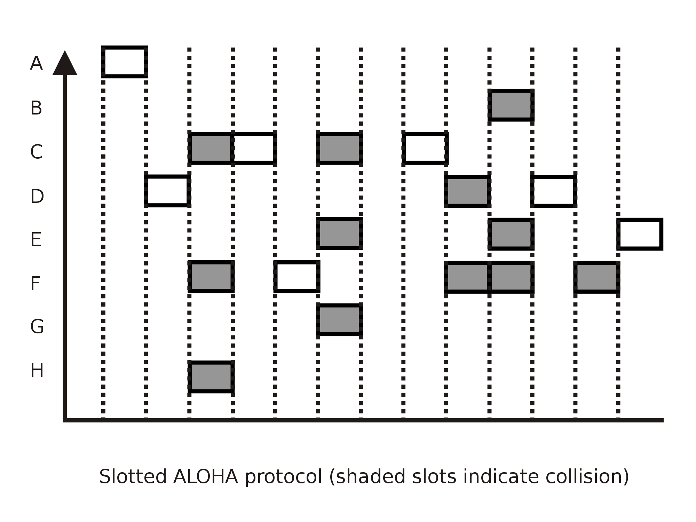</p> </div> --- <!-- .slide: class="section-slide" --> # CSMA --- ## CSMA: nasłuchiwanie nośnej *Carrier Sense Multiple Access*: 1. stacja sprawdza, czy medium jest zajęte, 2. jeśli jest wolne, może rozpocząć nadawanie, 3. jeśli jest zajęte, czeka zgodnie z regułą protokołu. Kolizja pozostaje możliwa z powodu opóźnienia propagacji. --- ## Warianty CSMA - **1-persistent:** nadaj natychmiast, gdy medium stanie się wolne. - **non-persistent:** odczekaj losowo i sprawdź ponownie. - **p-persistent:** w pracy szczelinowej nadaj z prawdopodobieństwem `p`. Wybór jest kompromisem między opóźnieniem a ryzykiem kolizji. --- <!-- .slide: class="section-slide" --> # CSMA/CA --- ## Unikanie kolizji *Collision Avoidance* stosuje się w szczególności w Wi-Fi, gdzie wykrywanie kolizji podczas własnego nadawania jest trudne. - nasłuchiwanie kanału, - losowy czas oczekiwania (*backoff*), - opcjonalnie RTS/CTS, - potwierdzenia odbioru.  --- ## Dlaczego Wi-Fi unika kolizji? Węzeł radiowy może nie słyszeć innego węzła, choć oba zakłócają odbiornik docelowy. To klasyczny problem **ukrytego terminala**. <div class="packet"><span>Stacja A</span><span>nie słyszy B</span><span>Stacja B</span><span>punkt dostępowy</span></div> --- <!-- .slide: class="section-slide" --> # CSMA/CD --- ## Wykrywanie kolizji *Collision Detection* było stosowane w klasycznym, współdzielonym Ethernecie: 1. nasłuchaj medium, 2. rozpocznij transmisję, 3. monitoruj medium podczas nadawania, 4. po wykryciu kolizji przerwij transmisję, wyślij sekwencję zagłuszającą i wykonaj losowy backoff. --- ## CSMA/CD: decyzja po kolizji <div class="media-gallery"> <p>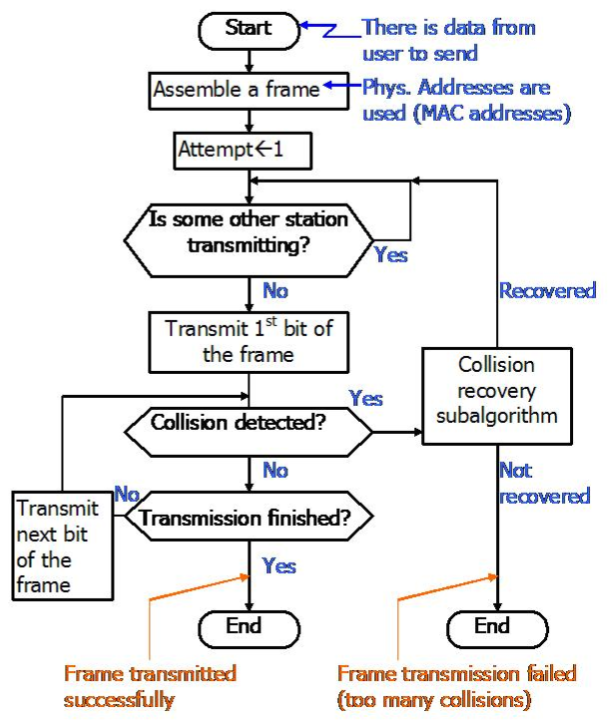</p> </div> --- ## Kolizja w CSMA/CD: propagacja <div class="media-gallery four"> <p>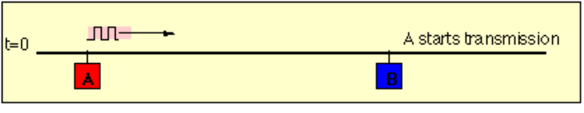</p> <p>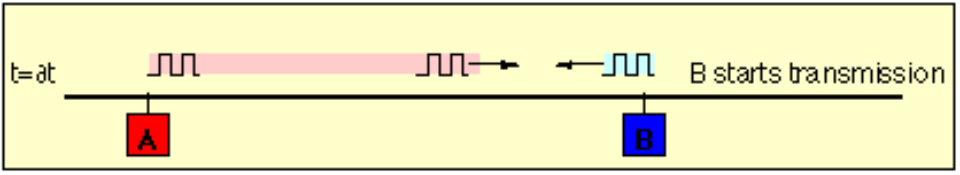</p> <p>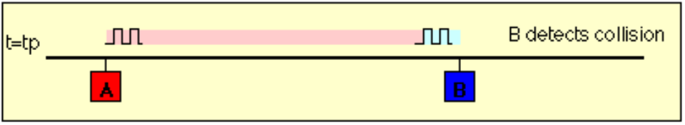</p> <p>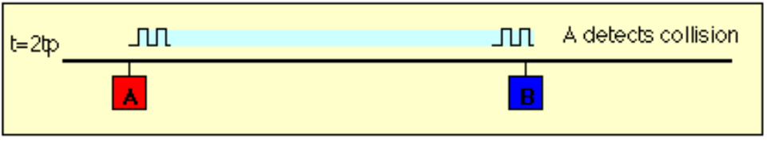</p> </div> --- ## Minimalny rozmiar ramki Nadawca musi jeszcze transmitować, kiedy ewentualny sygnał kolizji zdąży do niego wrócić z najdalszego punktu sieci. Z tego wynika minimalny rozmiar ramki Ethernetu. --- ## CSMA/CD a współczesny Ethernet - CSMA/CD było potrzebne przy współdzielonym, półdupleksowym medium. - Dzisiejszy Ethernet przełączany jest zwykle pełnodupleksowy. - W takim połączeniu nie ma współdzielonego kanału między dwoma końcami, więc kolizje nie występują. --- ## Porównanie <div class="comparison-grid"> <div><strong>ALOHA</strong>nadaj, potem reaguj<br>proste systemy radiowe</div> <div><strong>CSMA</strong>nasłuchaj przed nadaniem<br>współdzielone LAN</div> <div><strong>CSMA/CA</strong>staraj się uniknąć kolizji<br>Wi-Fi</div> <div><strong>CSMA/CD</strong>wykryj kolizję podczas nadawania<br>historyczny Ethernet współdzielony</div> </div> --- ## Podsumowanie - Wspólne medium wymaga zasad dostępu. - ALOHA jest proste, ale mało wydajne przy obciążeniu. - CSMA zmniejsza liczbę kolizji przez nasłuchiwanie. - Wi-Fi używa CSMA/CA, a klasyczny Ethernet używał CSMA/CD.